← Índice de los 69 tutes de IDA
Tute 31 · Explicación de la solución del CVE
se conecta con: Vulnerabilidades (defensivo)
INTRODUCCIÓN AL REVERSING CON IDA PRO DESDE CERO PARTE 31.
EXPLICACION DE LA SOLUCION DEL CVE.
Antes de hacer el ejercicio de la parte anterior voy a poner algo más de explicación sobre algunos puntos que quedaron un poco oscuros en la velocidad de solucionar el mismo y luego armaremos el POC.
Uno de los puntos que quedo poco claro es porque a veces aceptamos el largo del array que nos propone IDA al hacer click derecho-ARRAY y a veces lo cuestionamos como en el ejercicio anterior y ponemos un valor de largo más grande.
Obviamente eso se realiza por experiencia más que nada, pero vamos a tratar de explicar con un par de ejemplos cuál es el criterio.
Veamos este ejemplo simple.
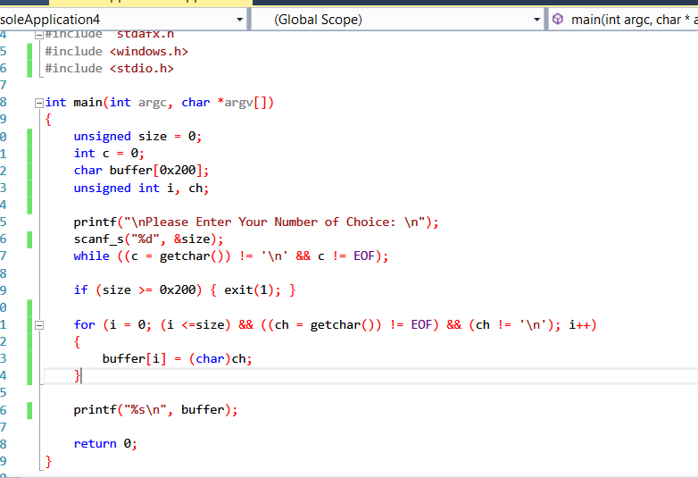
Tiene una entrada por teclado para ingresar el size el cual se chequea que no sea mayor o igual que 0x200 (unsigned).
Luego un loop que se repite la cantidad de veces igual a size, para leer de teclado con getchar de a un carácter lo que tipeamos.
Esto no sería vulnerable a buffer overflow, porque el size es unsigned, así que no hay problemas de signo al comparar contra 0x200.
Y luego irá leyendo caracteres y copiando al buffer que como su largo es 0x200 no desbordara.
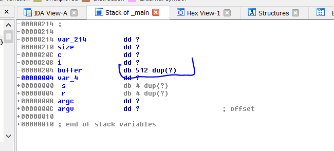
Si lo veo con IDA, como lo compile con símbolos ya detecta el buffer correctamente (512 decimal es 0x200), igual si lo compilo nuevamente sin símbolos.
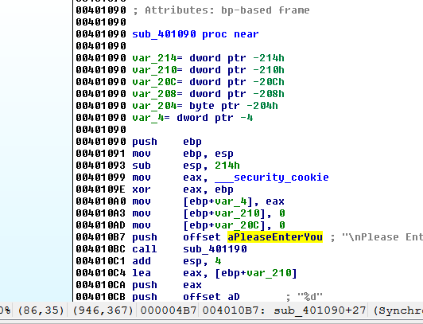
Veamos la representación del stack.
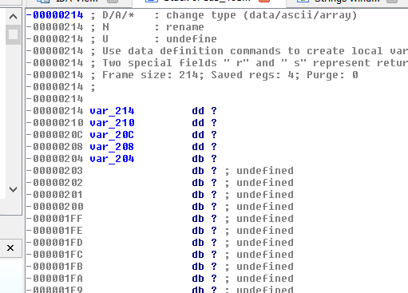
Vemos que aquí no detecta buffer ni nada así que hay que hacerlo a mano, como hay espacio vacío es muy posible que var_204 sea el buffer, veamos sus referencias.
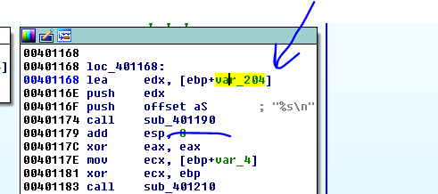
Allí está una referencia clara cuando imprime el buffer al final, normalmente cuando hay una referencia con un LEA casi seguro es un buffer, además 0x401190 será printf.
La otra referencia a buffer es dentro del loop cuando lo va llenando con los bytes que lee con getchar.
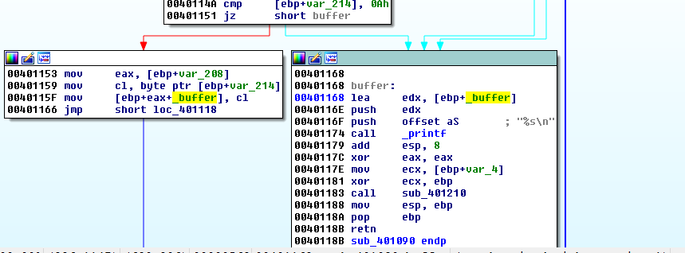
Ahora vayamos a la representación del stack y veamos el largo del buffer.
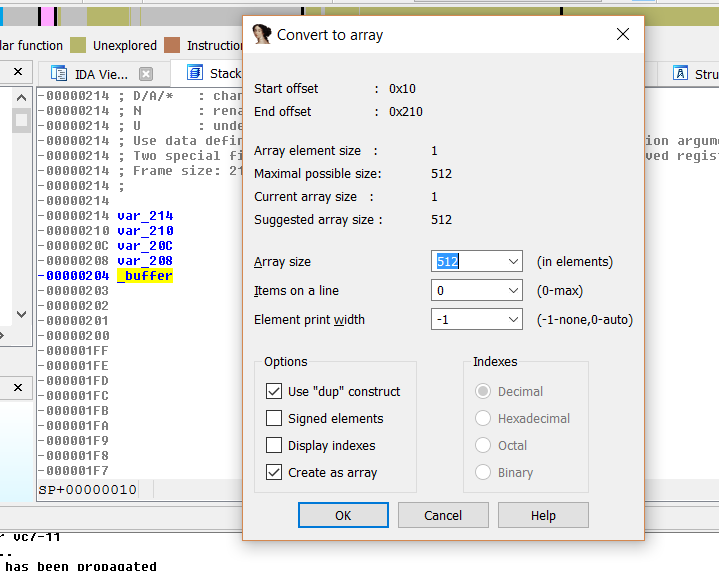
Vemos que nos dice 512 que estaría correcto, pero porque dice 512?
Porque IDA mira el espacio vacío que hay hasta la siguiente variable que es var_4, ahora el método para asegurarnos es ver donde se guarda por primera vez un valor y donde se usa a posteriori esa var_4, veamos.
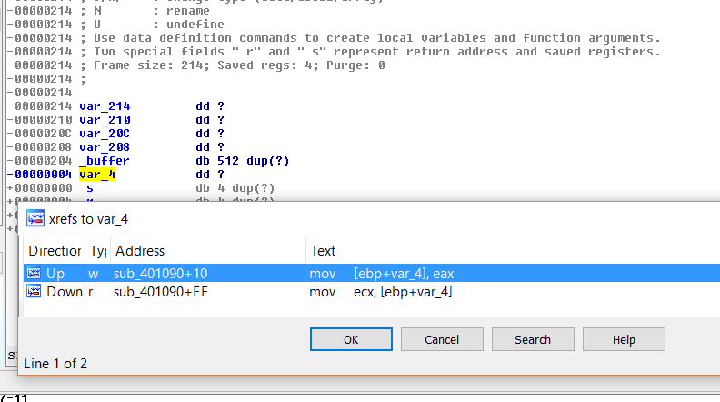
Vemos que hay dos lugares uno donde se inicializa con un valor (se guarda la SECURITY COOKIE) y otro posterior donde se lee.
Vayamos al primero.
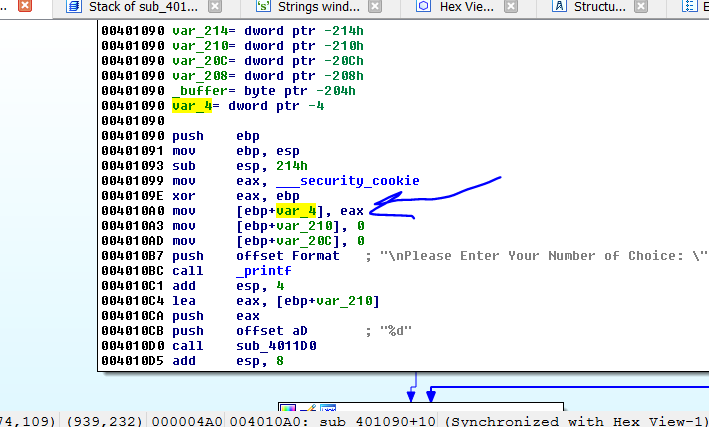
Vemos que mucho antes de que se llene el buffer en el loop, la var_4 toma valor en forma que no tiene relación con el buffer, por lo cual determinamos que es una variable independiente y que no pertenece al buffer.
Lo guardo como BUFFER1.exe, aquí IDA no se equivocó.
Ahora haré otro ejemplo a este lo llamaré BUFFER2.exe.
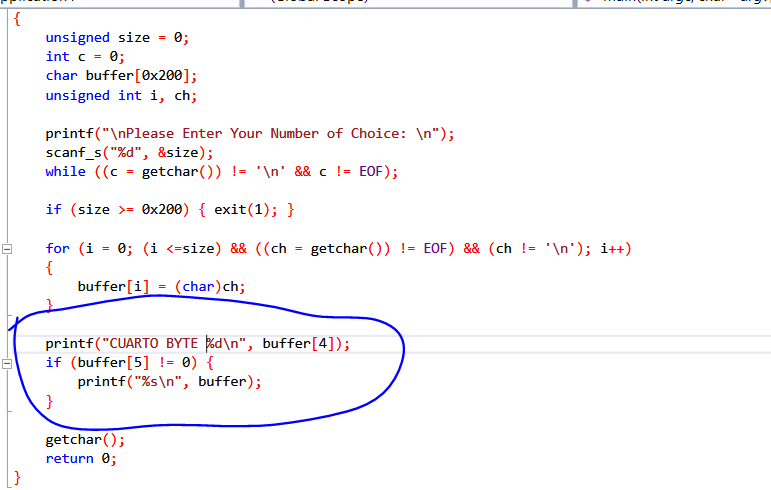
Vemos que el tamaño del buffer sigue de 0x200, todo es igual al ejemplo anterior, salvo que aquí, imprimo el CUARTO BYTE del buffer, y comparo el QUINTO BYTE con cero y si es igual imprimo buffer.
Veamos qué pasa cuando lo compilo con símbolos y sin símbolos.
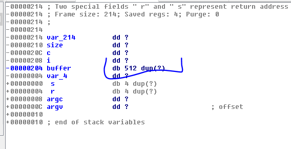
Vemos que con símbolos no hubo problema, sigue detectando el buffer como de 0x200 y el CUARTO BYTE que imprime.
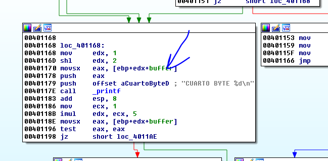
Vemos que no lo toma como una variable independiente lo cual era mi idea, lee el cuarto byte del buffer al que accede sumándole 4 (SHL EDX, 2 es igual a multiplicar EDX por 4) y luego se lo suma a la dirección de inicio del buffer para buscar el valor del cuarto byte.
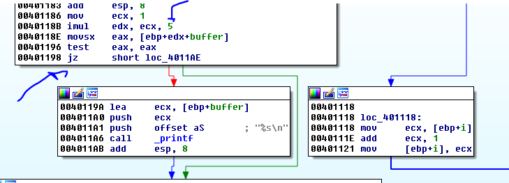
Aquí multiplica EDX por 5 y se lo suma al inicio del buffer para apuntar y hace MOVSX a EAX el contenido luego si es distinto de cero evita imprimir.
Vemos claramente que el buffer no fue afectado y que con símbolos IDA sigue detectando bien el largo del mismo, veamos sin símbolos.
Lo abro y veo que IDA no se equivocó, no asigna una variable a los valores cuarto y quinto del buffer (aunque hay casos en que si lo hace) sigue dándome 512 de largo porque la siguiente variable sigue siendo var_4 el CANARY, si por algún motivo IDA detectara esos bytes cuarto y quinto como variables, obviamente no serían independientes, pues solo se llenan en el momento que se llena el buffer, fuera de eso no hay otro lugar donde guarda valores allí, por lo cual las debo considerar como parte del buffer.
Ahora ya que no me sale compilando un ejemplo donde se equivoque IDA, comparamos con el buffer del ejercicio, tomando como base que cuando IDA nos sugiere un largo de un buffer hay que seguir buscando hacia abajo la primera variable independiente (que se inicializa en otro lugar diferente al buffer), que sería el verdadero límite del buffer.
Veamos el buffer del ejercicio.
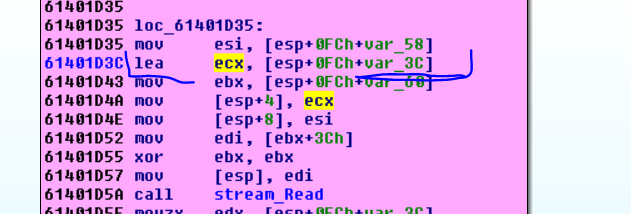
Ese LEA es muy posible un buffer en el stack que le pasa a la función stream_Read, renombrémoslo a buffer.
Vayamos mirando las variables que hay hacia abajo, para ver cuál es la primera independiente del buffer.
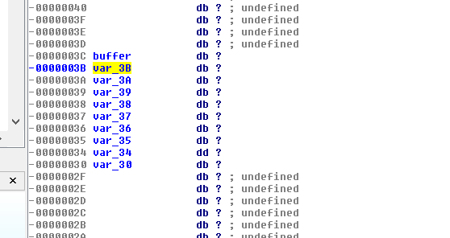
Voy apretando X en cada una.
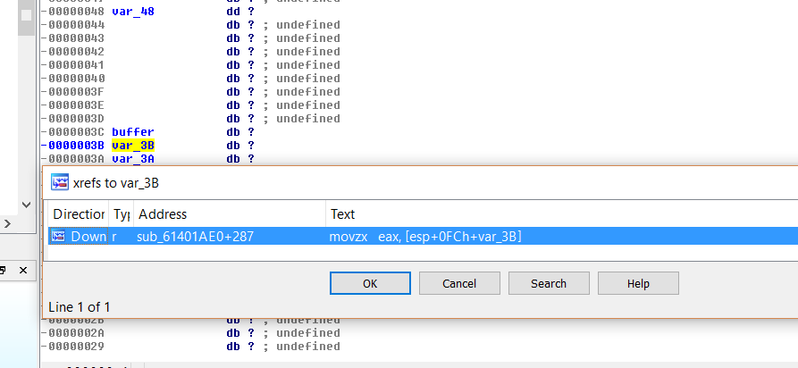
Allí veo como deje en el listado el cursor en el LEA donde va a leer al buffer, que usa esa variable más abajo (DOWN), y no tiene sentido que la use si no hay ninguna otra referencia donde se guarde algún valor inicial, el único lugar posible es cuando llena el buffer, lo mismo pasa con las siguientes variables en todas pasa lo mismo.
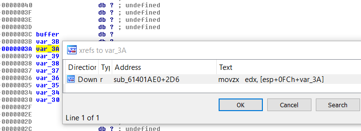
Mismo caso, pertenece al buffer.
La primera que tiene una referencia distinta es.
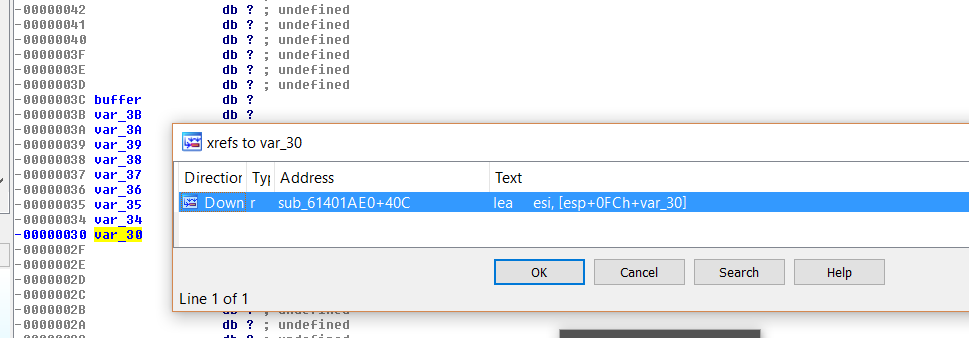
Que parece un buffer pues tiene un LEA, miremos.
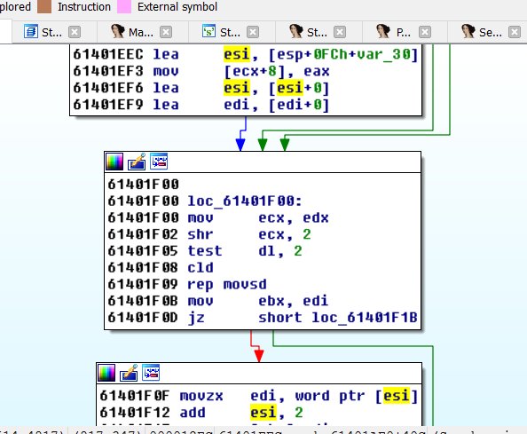
Vemos que si es un buffer pero que es parte del mismo buffer anterior, pues no tiene ningún lugar independiente donde se llene, ya la primera referencia se pasa como source a un reps movs para lo cual ya tiene que tener valores guardados para poder copiarlos a otro lugar,
También marca DOWN o sea que se usa después del llenado del buffer original, así que nada sigamos bajando.
Sigue en todas las variables siguientes solo leyendo más abajo de donde se llena el buffer hasta acá.
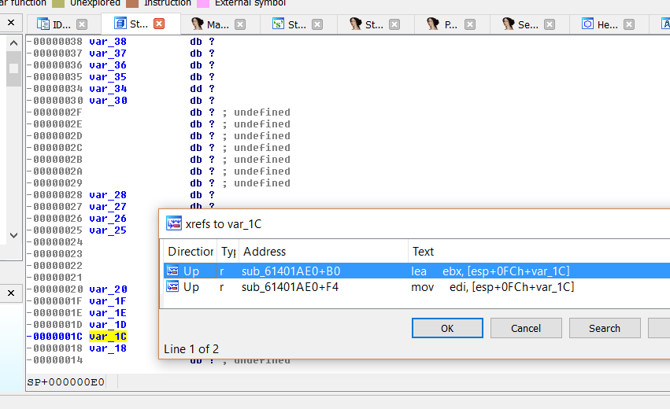
Este muestra un LEA y UP o sea que está más arriba de donde se llena el buffer original.
Vemos que este es otro buffer pero independiente del original.
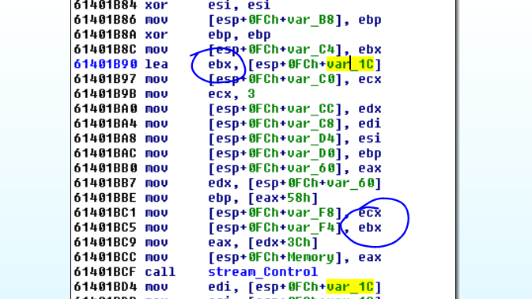
Se le pasa como argumento a stream_Control y se llena allí, así que encontramos la primera variable independiente y por eso el buffer termina justo antes de esta variable.
No había visto por hacerlo con velocidad que hay otra llamada a stream_Read más arriba con el mismo buffer.
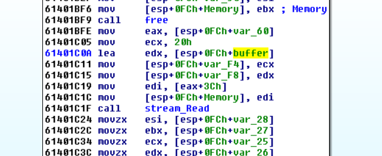
Igual el análisis es el mismo no hay ninguna de las variables hasta la 1c que tenga referencias de escritura en las mismas, antes de alguno de los lugares donde se llena el buffer.
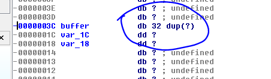
Quedo de 32 bytes, y todas las variables que quedaron dentro del buffer pudimos verificar que son internas del mismo, y no son independientes.
Lo otro que me preguntaron es como me di cuenta que stream_Read podría escribir la cantidad de bytes que le pasamos a un buffer, el nombre sugiere eso, además el parche que limita el valor que llega allí a que si es mayor que 8 me dio que sospechar que es el size máximo que copiara.
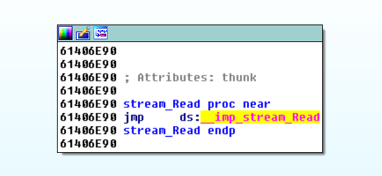
Allí vemos que va a stream_Read sigamos con enter allí.
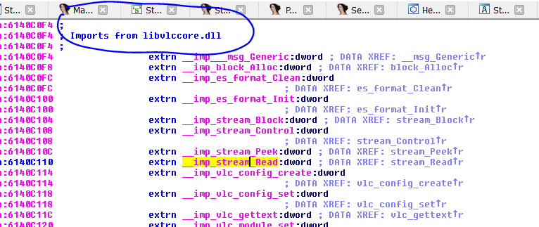
Allí vemos que es una función importada de libvlccore.dll, así que la busco en la versión vulnerable y la abro en otro IDA.
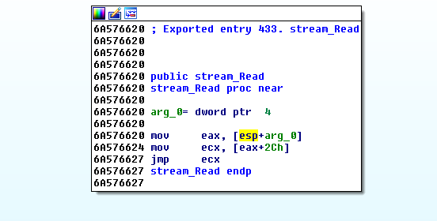
Veo que la función depende de un arg_0 que es una constante que viene de la llamada, pues según esa constante decide adonde saltar. [eax+2c].
Podría reversear para hallar adonde salta pero como voy a armar el POC y para eso tengo que debuggear lo resolveré debuggeando.
Para los que preguntaron que era un POC es un proof of concept que no es un exploit completo, pero demuestra la vulnerabilidad, creando un archivo ty en este caso, que desborde el buffer de 32 bytes.
Como lo tengo remoto al programa lo atacheare con el debugger remoto, el que lo tenga local elige el debugger local y lo atachea.
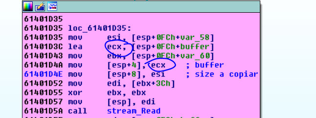
Primero voy a ver de dónde sale ese valor ESI que tiene el size a copiar y que se ve que proviene de var_58, lo renombrare a size_a_copiar.
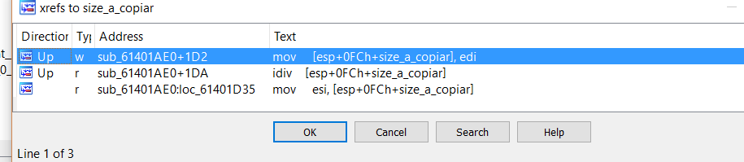
Vemos donde lo guarda y que le realiza una división con IDIV, pero primero vayamos a donde lo guarda.
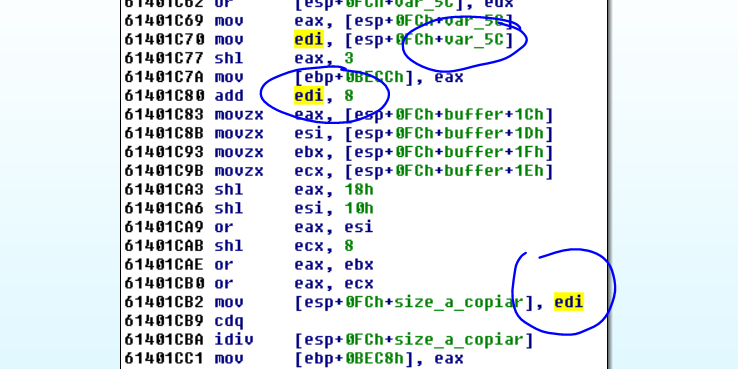
Vemos que ese EDI que se guarda en size_a_copiar viene de otra variable var_5c y que le suma 8, renombrare.
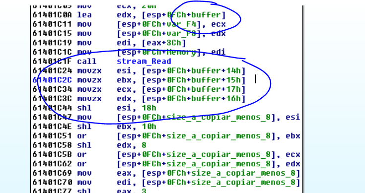
Vemos que todo sale del primer llamado a stream_Read, saca los bytes de la posición 14-15-16 y 17 y lo armara para mediante shl y or quede el DWORD seguramente en size_a_copiar_menos_8.
Ponemos un breakpoint allí en el LEA
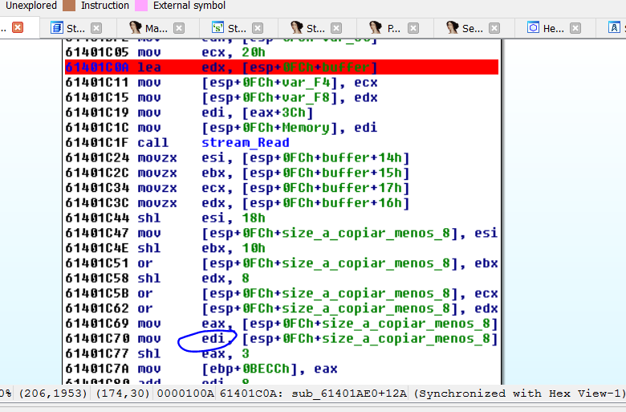
Atacheemos el programa y arrastramos y soltamos el archivo .ty original en el VLC.
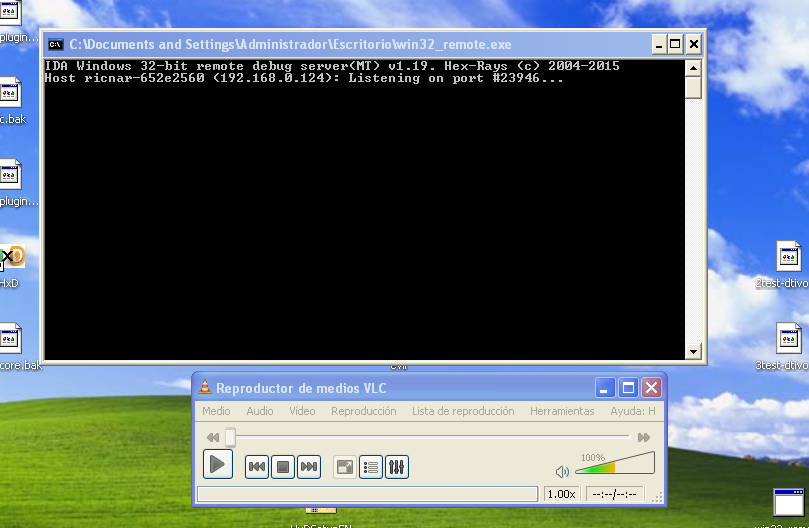
Allí lo tengo al VLC abierto en mi máquina virtual y al win32_remote.exe
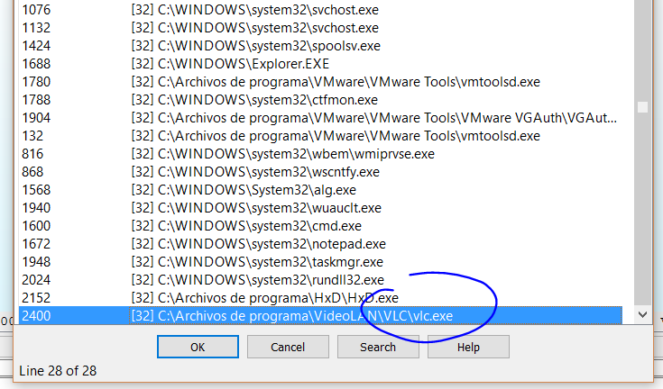
Atacheo.
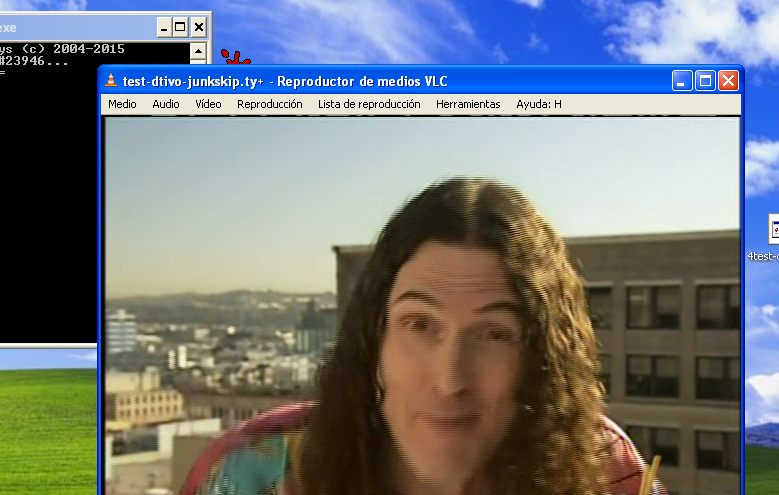
Después de reproducir un rato para en el Breakpoint.
Paso con F7 y veo en EDX la dirección del BUFFER.
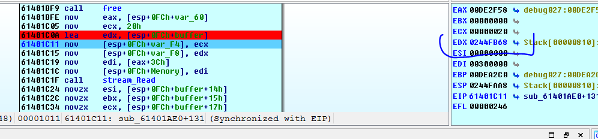
hago click en la flechita al lado de EDX teniendo el foco en el listado.
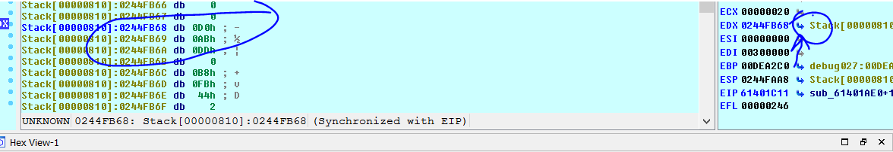
Ahora puedo hacer click derecho y crear el array ahí en la memoria, de 32 bytes decimal.
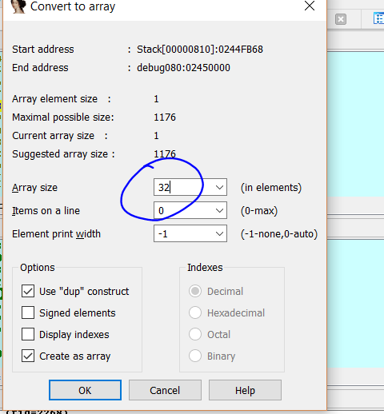
Allí quedo.
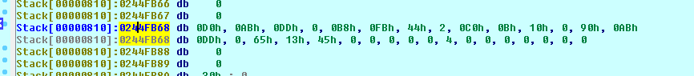
Ponemos un breakpoint on write en el primer dword del buffer para ver que pare cuando lo llene dentro de stream_Read.
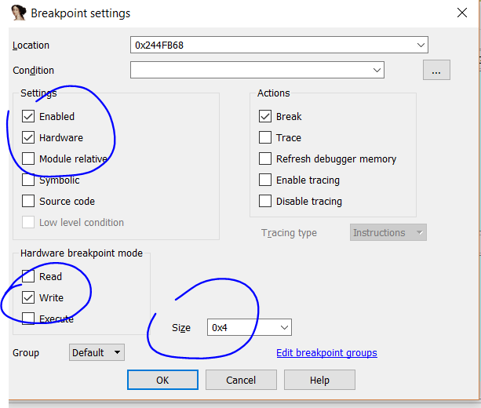
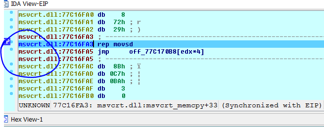
Al dar RUN para en la msvcrt en un rep movsd copiando al buffer.
En el menú DEBUGGER- DEBUGGER WINDOWS-MODULE LIST sale la lista de módulos y ahi busco msvcrt.dll.
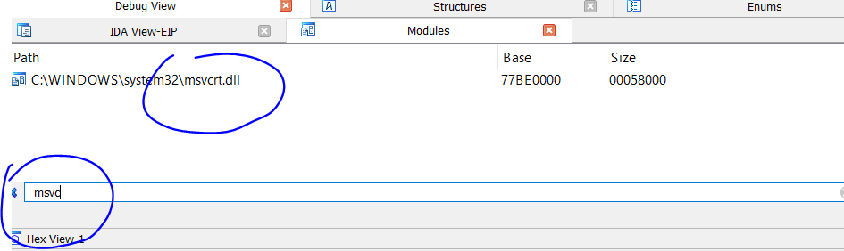
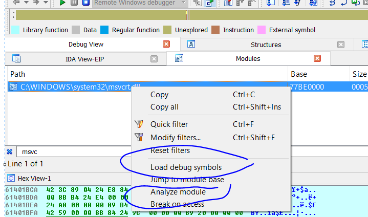
Hago click derecho ANALIZE MODULE y cuando termina hago LOAD DEBUG SYMBOLS y ahora se ve más linda la función y podemos ver en el call stack donde estamos realmente.
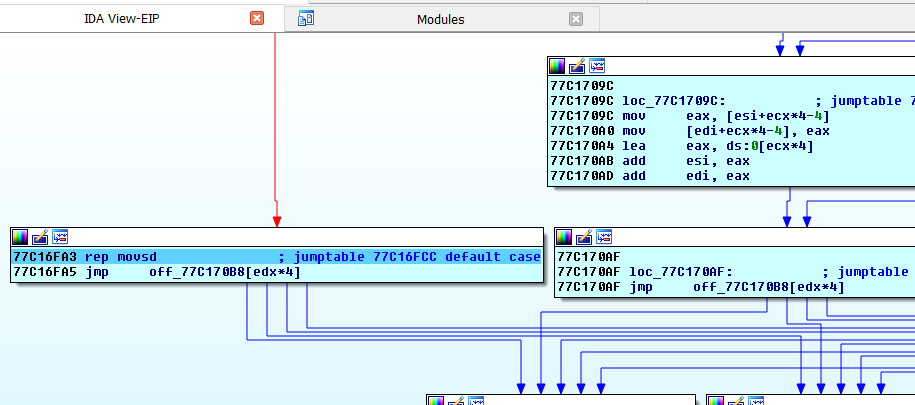
EN DEBUGGER-DEBUGGER WINDOWS -STACK TRACE.
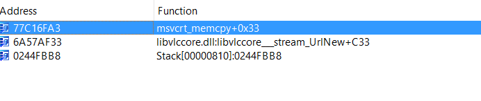
Vemos que estamos dentro de un memcpy y de donde viene.
Lo cierto es que reps movs copia desde lo que apunta ESI que es el source a lo que apunta EDI que es el destino, y ECX es la cantidad de dwords a copiar, veamos a qué apunta ESI hacemos click en la flechita al lado de ESI pero teniendo el foco en HEX DUMP para ver allí.
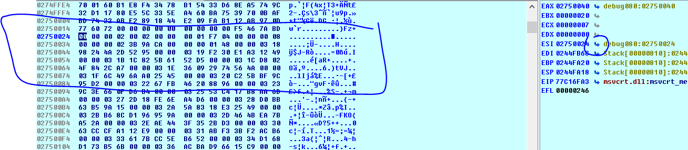
Eso es lo que copia en el BUFFER abramos el archivo .ty en un editor hexa y aquí hagamos.
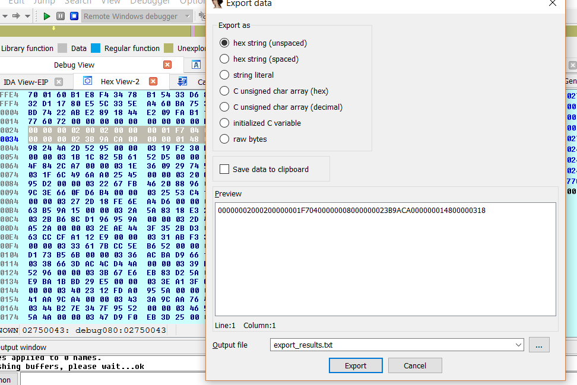
Marquemos 32 bytes y hagamos EDIT-EXPORT DATA para copiar los bytes marcados en el formato que queremos.
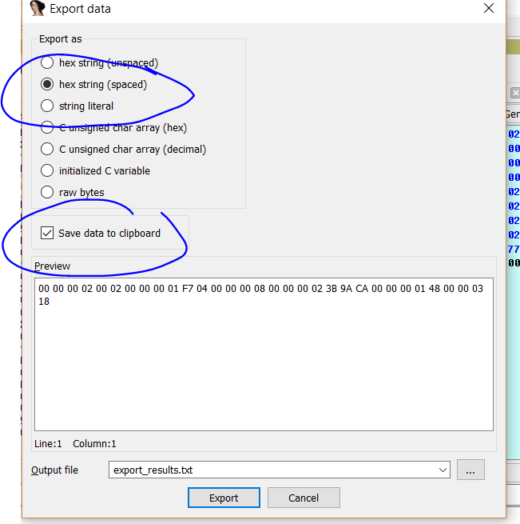
Creo que asi quedara mejor.
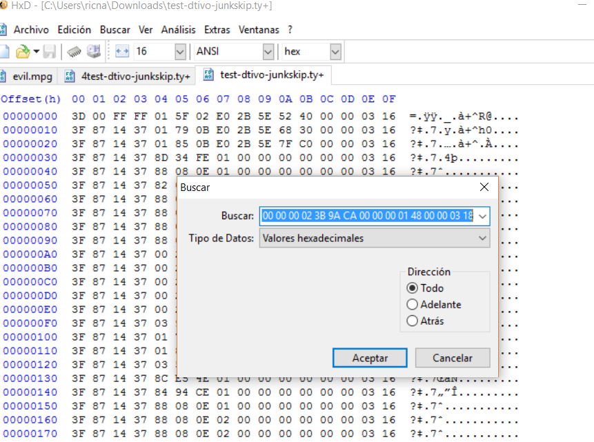
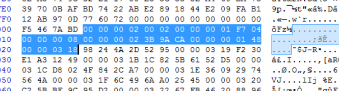
Así que ya encontramos los bytes que lee del archivo, sabemos que el 14-15-16 y 17 son los que armaran el valor, le sumará 8 y hará una división y llegará al valor, veamos cual es aquí.
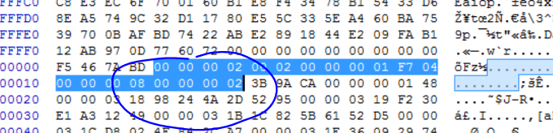
Es ese 00 00 00 02 pongamos un breakpoint para que pare al volver del stream_Read de nuevo en la dll libty_plugin.
Lo tuve que tirar de nuevo porque se cayó el IP
Ahora el buffer está acá.
Lo puedo poner en hex dump y sumarle 0x14 a la dirección del buffer y veo que es el 00 00 00 02 que habíamos visto en el archivo.
Traceemos a ver que hace.
Vemos que todo eso es para armar el DWORD y pasarlo a EDI, luego debería sumarle 8.
Y más adelante hará un IDIV lleguemos ahí.
Allí está el 0x0a que provino del 0x02 que leyó del archivo y le sumó 8, quedando 0xa.
IDIV es la división con signo dividirá EDX:EAX por el size a copiar el que no se modificara, el problema es que si subo mucho el size a copiar la división dará cero y eso es el valor que va al MALLOC luego de multiplicarlo por 16, así que debemos manejar bien esta división para que no de cero.
EDX:EAX es 00000000:00000148 y se divide por 0A, si vemos en el archivo el 0x148 está cerca del 00000002.
Así que si subo el 02 tendré que subir también el 0x148 para que la división no de cero, lo hare.
De esa forma veremos si llega al stream_Read con un size grande mayor que 8 que desborde el buffer, lo volvemos a tirar con este archivo modificado.
Alli arma el 0x4647 en EDI, luego le sumará 8.
Luego hará el IDIV 0000000:AA48 dividido 0x464f
El resultado de la división queda en EAX y es 2.
Ese es el máximo que va a multiplicar por 16 y llamar a malloc, como no estamos explotando el heap overflow, mientras que alloque estará bien.
Así que llama a malloc con el tamaño 0x20, allocara sin problema.
Va al bloque donde está la vulnerabilidad, con el size_a_copiar 0x464f que obviamente es mayor que 8, lo que en la versión parcheada lo tiraría fuera y no habría overflow.
Le colocó breakpoints en el buffer, ECX apunta al mismo, voy allí y le pongo hardware breakpoint on read write para que pare cuando comience a llenar el buffer.
Le daré F9 para que pare cuando copie al buffer.
ECX está copiando 1192 dwords ya que rep movsd es REPETIR MOV DWORDS, así que el total que escribirá en un buffer de 32 bytes es 0x1192 x4 o sea 0x4648 que proviene de redondear el 0x4647 que puse en el archivo.
Ahora llegaré hasta el ret ya que seguro pisa el mismo por el largo que tiene lo que copia al buffer.
Voy haciendo RUN TILL RETURN o CTRL más f7 y vuelve a la función principal, donde está alojado el buffer al llegar al ret de la misma debería crashear.
Pongo un breakpoint en el ret de la función y deshabilito todos los otros.
Veo que el stack está destruido porque pise todo alli, voy a HEX VIEW y apreto la flechita al lado de ESP.
Busco esa cadena en el archivo.
Esos son los valores que va a saltar ya que pisamos el return address, lo cambiare por .
Ahora lo tiró con este archivo modificado.
Listo ahora si ejecuto ya tomó control de EIP que es el objetivo de un POC, o de la mayoría algunos ni llegan a eso solo rompen el programa y listo.
Si todo va bien se podría explotar, ya veremos cómo continuar con la explotación de este ejemplo más adelante ahora en las partes siguientes vamos a seguir con la teoría que falta y algunos ejemplos sencillos programados por mi para que practiquen yo ya trabajé mucho jeje.
Es de notar que la extensión del archivo debe ser ty+ si no no pasa por la parte vulnerable, si la cambiamos.
Hasta la parte 32.
Ricardo Narvaja